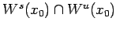
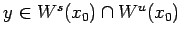
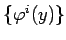

Inhalt Index DeskTop Bronstein

 Dynamische Systeme und Chaos Gewöhnliche Differentialgleichungen und Abbildungen Zeitdiskrete dynamische Systeme Invariante Mannigfaltigkeiten
Dynamische Systeme und Chaos Gewöhnliche Differentialgleichungen und Abbildungen Zeitdiskrete dynamische Systeme Invariante Mannigfaltigkeiten


Die Separatrixflächen Ws(x0) und Wu(x0) einer hyperbolischen Ruhelage x0 von (17.3) können sich schneiden. Ist der Schnitt  transversal, so heißt jeder Punkt  transversaler homokliner Punkt.
Dabei gilt: Ist y transversaler homokliner Punkt, so besteht der Orbit  des invertierbaren Systems (17.3) nur aus transversalen homoklinen Punkten (s. Abbildung).